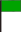

finish flags, or right-click on the map and choose 'Set start' / 'Set destination'.
Long routings may take several minutes. Please avoid frequent long routings.
Short routings (up to 4 days) should only take a few seconds.
A popup is shown if a GPRMC message was successfully received. Click 'ok'.
The start flag will be moved to your boat position and the start time is set to the timestamp of the NMEA message.
Observe the timestamp. You may need to press 'Update' repeatedly to receive the latest message.
When routing is complete and the route is displayed, click on any route point to anchor the TWA tool on it.
Click on the map to set a direction. The blue path represents a fixed heading.
During wind updates the TWA tool may attempt to use a forecast that is not yet available. In this case, retry later or select an earlier time using the forecast slider.
This may happen when wind conditions are unfavourable and the boat's tacking angle is large, or when there are too many obstructions in the area.
You can usually work around this by moving the target behind or sideways from your actual destination.
Error handling urgently needs to be improved.
| Source | Completed cycle (UTC) | In progress |
|---|